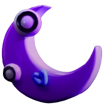
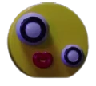

How 2 Draw The Amazing Digital Circus
For Every Character/Stucture You Draw You Have 2 Donate 10$ To Joe Kletzing & His Descendants this doesn't apply to Joe Kletzing & His Descendants
step 1:WATCH The Amazing Digital Circus
step 2:Get 1 Pencil,1 Eraser,1 Red Marker,1 Orange Marker,1 Beige Marker,1 Yellow Marker,1 Green Marker,1 Cyan Marker,1 Blue Marker,1 Purple Marker,1 Pink Marker,1 Black Marker,1 Grey Marker
Now You're Ready 2 Draw The Amazing Digital Circus
Bubble.
Description: He's An AI,Like Caine,But More Annoying & Weird. This Causes Caine To Want To Pop Him,But He Just Respawns.
Alliases: PARISITE!(Caine)Bubbles(Fanbase,Accidentally)Caine's Unamed Pet(Fanbase,Accidentally)Head Chef Bubble(Caine,Occasionaly)
Positive Relationships: Freind: Caine (1-sided,Bubble's Side,But Sometimes a 2-sided Relationship)
Neutral Relationships: Anyone That's Not Caine Jax(1-sided,Jax's Side)
Negative Relationships: Jax(1-sided,Bubble's Side)
The Reason Why I'm Doing Bubble 1st Is Because He's The Smallest & Makes A Good Unit For Mesauring
step 1.Draw A Circle
step 2.Draw A Large SemiCircle With The Round Edge Pointing Down
step 3.Draw A ZigZag In the SemiCircle 2 Make His Sharp Teeth
step 4.Draw 2 Dots For His Eyes
step 5.Color Him In! His Eyes Are A Dark Brown-Red,& His Body Is Cyan
Gloinks.
Description: The Gloinks Are Small Creatures That Run Around Causing Mayhem And Mischeif Wherever They Go !
Alliases: Humanoid Hashbrowns(Caine)These Things(Jax)Inscects(Kinger,Possibly)
Positive Relationships: The Gloink Queen (Creator)
Neutral Relationships: Caine,Bubble,Pomni(Haven't Met),Ragatha,(Haven't Met)Moon,(Haven't Met)Sun(Haven't Met)
Negative Relationships: Gangle,Zooble,Kinger,Jax,Abstracted Kaufmo
Gloinks Are 1 Bubble Tall
step 1.Draw A Shape Of Your Choice. (Options Are: Square,Circle,Triangle,Star,Moon,Bowling-pin)
Pomni.
Description: She's The Newest Performer,& Also The Shortest,She's Almost Never Smiling,Name Ironically Means Remember In Multipe Foreign Languages
Alliases: XDDCC(Caine,Formerly,Changed Because Name Was Hard To Pronounce),New Stuff(Ragatha,Formerly,Before Named),Kid(Jax),Newbie(Jax,Formerly,Before Named)New Character(Jax,Formerly,Before Named)
Positive Relationships: Jax(1-sided,Jax's Side),Ragatha
Neutral Relationships: Gangle,Zooble,Kinger,Abstracted Kaufmo,Bubble,Caine,Moon,Sun,Gloinks(Haven't Met),Gloink Queen(Haven't Met)
Negative Relationships: Jax(1-sided,Pomni's Side)
With Her Hat,She's 2.5 Bubbles Tall
step 1.Draw A Circle
step 2.Draw 2 Circles Inside The Big Circle For Her Eyes *Make Sure They Have A Thicker Outline For Her Eyeliner*
step 2.Draw 1 Circle Inside Each Of The Smaller Circles For Her Pupils
step 4.Split The 2 Smallest Circles Into 6 Parts
step 5.Add Her Eyelashes,There Are 3 On Each Eye,On Her Right They Point Down,& On Her Left They Point Up *Note That The Character's Right & Your Right Are Different*
step 6.Draw An Upside-Down U For Her "Iconic Smile"(They Don't Ever Realy Smile This Is Her Frowning)
step 7.Draw 2 Short Ovals Underneath Her Eyes 2 Represent Blush(This Is Different Than Her Actualy Blushing!)
step 8.2 Draw Her Jester Hat,